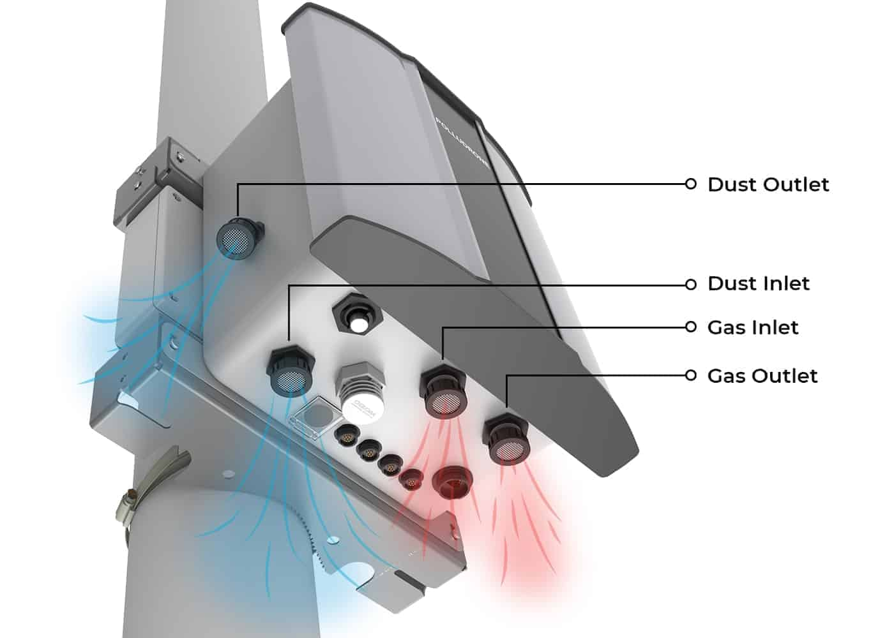
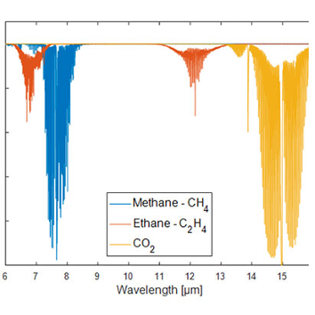

Les Capteurs de pollution atmosphérique
Selon notre sondage,
Les capteurs de pollution de l'air : Innovations Scientifiques pour un Avenir Durable
Beyrouth est depuis longtemps confrontée a des problèmes de qualité d’air, ayant pour cause principale le trafic routier selon « OpenEdition Journals », fait qui a été déterminé grâce a une démarche cohérente, une enquête par questionnaire menée dans la ville de Beyrouth et sa proche banlieue. Qualifiée d’anarchique, l’urbanisation de Beyrouth est inéluctable, et environ 75% de la ville connait une agglomération importante. Ainsi, la qualité de l’air et la pollution atmosphérique constituent des problèmes et dangers majeurs qui doivent être reconnus et résolus le plus rapidement possible afin de protéger la vie civile et l’environnement. Selon l’HAL, de nombreuses études et cas ont prouvé que les niveaux de dioxyde d’azote (NO2) à Beyrouth dépassent la limite fixée par l’Organisation Mondiale de la Santé (OMS), représentant un danger majeur pour la vie humaine.
Bref aperçu des risques et dangers
En 2022, 23,90 million de tonnes de dioxyde de carbone a été produit au Liban d’après « Our World in Data » :→Une augmentation des niveaux de CO2 pourrait être à l’origine d’une catastrophe nationale, étant donné que, à des niveaux plus élevés, CO2 pourrait provoquer une respiration rapide, une confusion, une augmentation du débit cardiaque, une pression artérielle élevée et une augmentation des arythmies. • Comme mentionne précédemment, la concentration du trafic à Beyrouth est la principale cause des émissions de dioxyde d’azote :
→ Des expositions excessives au NO2 sur de courtes périodes peuvent aggraver les maladies respiratoires, notamment l’asthme, entraînant des symptômes respiratoires tels que taux, respiration sifflante ou difficultés respiratoires. 
Les capteurs susmentionnés fonctionnent à travers :
• La colorimétrie ;• La chimiluminescence : méthode de détection de NO2 reposant sur la réaction entre l’oxyde d’azote (NO2) et l’ozone (O3), émettant de la lumière (indicateur) ;
• Des techniques par rayonnement infrarouge (RI) pour détecter les émissions de CO2 :
Le CO2 est un gaz mesurable par un capteur a RI, par leurs bandes d’absorption typiques.

Avantages des capteurs RI :
- Stables ;
- Hautement sélectifs ;
- Endurants ;
- Capables de supporter des niveaux élevés d’humidité et poussière puisque le gaz mesure ne rentre pas directement en contact avec le capteur.